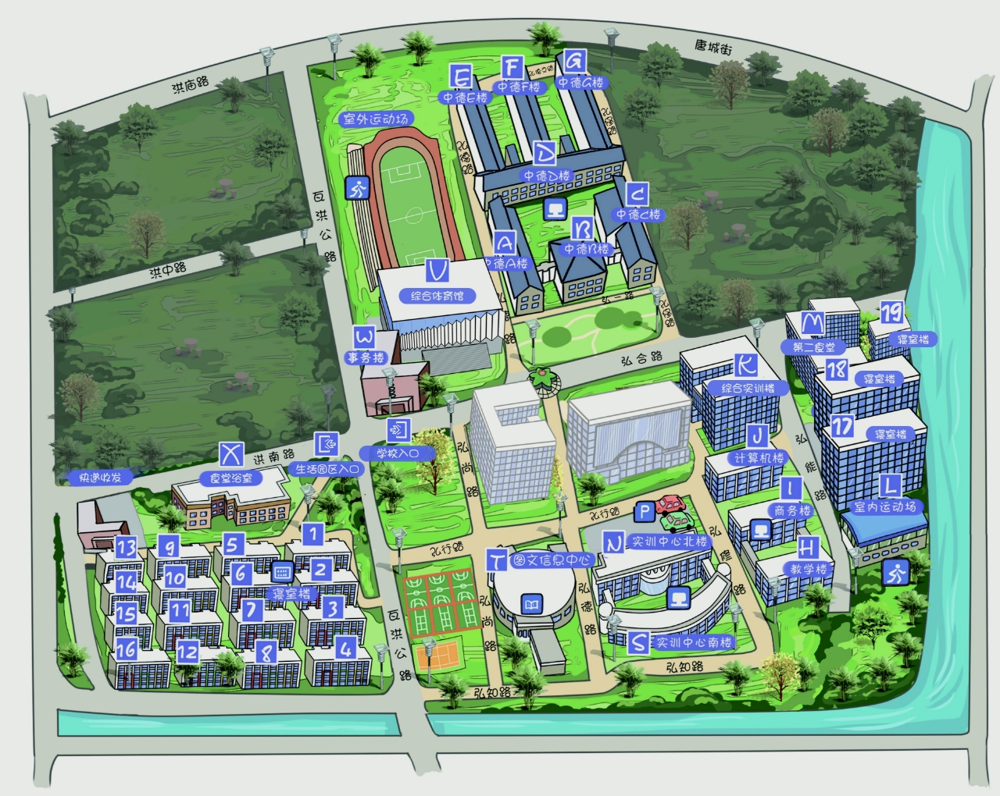

Simulated hourly consumption per building, compared with the trained
model's predictions. Color = relative load for that building; size = absolute kWh.

Low relative load Medium High relative loadDot size = absolute kWh
Data: campus_energy_simulated.csv and campus_energy_with_predictions.csv, generated by
simulate_data.py and train_model.py (see the src folder). Positions in data.json were
measured from the campus map image.